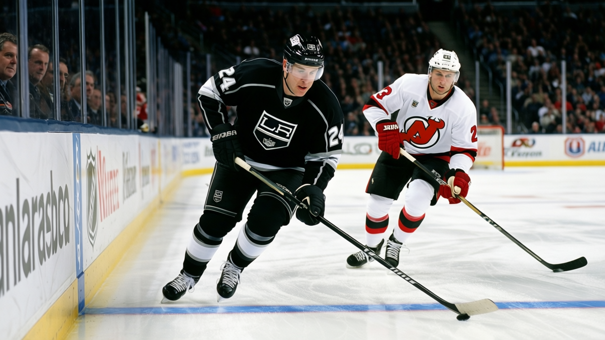

22.8 minutes a night: the year Alexander Frolov stopped being a maybe
Last season he played 13 minutes and finished with 24 points. This season the injuries found the men above him, and the minutes found him.
 Carol BinghamFeatures writer · Rinkside
Carol BinghamFeatures writer · Rinkside Alexander Frolov78 has 36 points in 31 games and 22.8 minutes a night, and
Alexander Frolov78 has 36 points in 31 games and 22.8 minutes a night, and  Los Angeles Kings are 8-14-5. Both numbers belong to the same story: a first-round pick who spent two years learning patience in the bottom six, now handed the space the injury report opened up.
Los Angeles Kings are 8-14-5. Both numbers belong to the same story: a first-round pick who spent two years learning patience in the bottom six, now handed the space the injury report opened up.
Last season Frolov played 82 games for 24 points. He skated 13.0 minutes a night. He was 21 years old, the 20th pick in the 2000 draft, and the Kings had no use for him on the first two lines. He took what he was given. He scored 14 goals and stopped there.
This year the numbers changed because the room changed.  Jason Allison87 has a wrist and is out until the 22nd.
Jason Allison87 has a wrist and is out until the 22nd.  Adam Deadmarsh87 has a groin and is out until the 21st of January. Tomas Zizka76 has a foot.
Adam Deadmarsh87 has a groin and is out until the 21st of January. Tomas Zizka76 has a foot.  Lubomir Visnovsky80 has a designation the league did not specify. Five men down, and the top six is a different shape than the one the summer was supposed to build around.
Lubomir Visnovsky80 has a designation the league did not specify. Five men down, and the top six is a different shape than the one the summer was supposed to build around.
Head coach Andy Murray told The Tunnel's Marcus Bell after a win in Phoenix this month: "the injuries came, you know, Jason Allison, Adam Deadmarsh, Zizka, and all of a sudden you've got to find minutes. And these kids, they've been ready. They've been ready for a while. We just had to find the space."
Frolov was in that group. The space opened, and he walked into 22.8 minutes a night and put up 12 goals and 24 assists. The assists are what matter here. His pass grade in the Book is 92. His deking grade is 92. He is a playmaker who spent two years in a role that never asked him to make a second pass.
Moscow, the first goal, and two years of waiting
Frolov was born in Moscow on June 19, 1982. The Kings drafted him 20th overall in 2000, the same draft that made  Rick DiPietro80 the first pick. He signed a three-year contract in July 2002 and made his NHL debut that fall. In his seventh game, against the Rangers on October 25, he scored a game-winner past Mike Richter. A 20-year-old from Moscow scores the one that decides the game in his seventh shift in the league, and then what? Then you play 13 minutes a night for two years.
Rick DiPietro80 the first pick. He signed a three-year contract in July 2002 and made his NHL debut that fall. In his seventh game, against the Rangers on October 25, he scored a game-winner past Mike Richter. A 20-year-old from Moscow scores the one that decides the game in his seventh shift in the league, and then what? Then you play 13 minutes a night for two years.
The Book has him at 78 today. The Bureau's Development Index has him up three points above his base grade, which is 77. His potential sits at 96. What makes the gap wide is near the top of the sheet: a 92 for deking, a 92 for passing, 88 for shot power, 86 for speed. What keeps him from climbing past 90 is near the bottom: a 50 for fighting, a 54 for injury resistance, a 55 for shot blocking. He will not drop the gloves, and it is not clear yet whether a player can succeed in this league without doing so.
His morale reads 98. He is 22. He plays in Los Angeles. He has one year left at $1.10M, the same contract he signed at 20, back when the game-winner against Richter still felt like a door opening. It has been one shift at a time since.
The price of a 96
The Kings' payroll sits at $48.60M. Frolov's $1.10M is a rounding error on it.  Zigmund Palffy87 has 59 points in 31 games, the only Kings name above Frolov's 36 in the league's scoring table. Behind Frolov sits
Zigmund Palffy87 has 59 points in 31 games, the only Kings name above Frolov's 36 in the league's scoring table. Behind Frolov sits  Mike Cammalleri83, 22 years old too, also on the Development Index risers, also at a fraction of what his grades say he should cost. The Index has Cammalleri at +6, Frolov at +3. LA has two of the youngest risers in the league and the most injuries of any club at 5 men out.
Mike Cammalleri83, 22 years old too, also on the Development Index risers, also at a fraction of what his grades say he should cost. The Index has Cammalleri at +6, Frolov at +3. LA has two of the youngest risers in the league and the most injuries of any club at 5 men out.
The contract year is the thing that makes this urgent. July 2005 will arrive whether or not the Kings are in a position to re-sign a 23-year-old left wing with 36 points and a 96 potential. His agent will make a call. His name will come up in rooms that are not in Los Angeles. The Bureau's Contract Ledger will file him in the same column as the other young men whose entry-level deals end in a summer the front office would rather not think about.

Frolov is not going to think about that. He skates and passes the puck to whoever has more room, takes the 92 in his pass grade and finds the teammate who can finish. He has been doing this in 13-minute shifts for two years without complaint.
Los Angeles Kings are 8-14-5. 108 goals for, 122 against. Five men are hurt. Someone has to carry the weight in that room, and Frolov is carrying it. At 22, with one year left at $1.10M and a pass grade of 92 that two years of bottom-six minutes never called for, Alexander Frolov is the best thing happening in a season that has very little else going for it.